COMPUTER GRAPHICS · 3D VISION
Beibei Wang
Professor · Nanjing University
Rendering · Material Appearance · 3D Computer Vision
I am currently a Professor at Nanjing University, Suzhou campus. My research mainly focuses on rendering and material appearance. I am also interested in 3D computer vision (e.g., surface reconstruction and relighting).
The main target is to create a realistic 3D digital world, including creating (reconstructing and generating) 3D assets (geometries and materials) and rendering these assets realistically.
beibei.wang@nju.edu.cn
Nanjing University, Suzhou, China
Research
News
- Aug. 2026: We have organized CCF CAD/CG 2026 (about 1,200 attendees)!
- Jul. 2026: We have three papers accepted to SIGGRAPH Asia 2026!
- Jul. 2026: One paper has been accepted to ECCV! Congrats to Xiang!
- Apr. 2026: One paper has been accepted to ACM TOG!
- Mar. 2026: We have two papers accepted to SIGGRAPH 2026! Congrats to Zixuan and Weiqing!
- Feb. 2026: We have four papers accepted to CVPR 2026!
- Feb. 2026: I will serve as AE of ACM Transactions on Graphics!
- Nov. 2025: Jiahui becomes Dr. Fan!
- Sep. 2025: We have two papers accepted to SIGGRAPH Asia 2025 and one TOG paper presented at SIGGRAPH Asia 2025.
- July 2025: I will serve as AE of Journal of Computer Graphics Techniques.
- July 2025: Our ROR paper is accepted to ACM TOG. Congrats to Zuoliang!
- June 2025: We have one paper accepted to ICCV 2025. Congrats to Zuoliang!
- We have two papers accepted to SIGGRAPH 2025.
- We have two papers accepted to CVPR 2025. Congrats to Jiahui and Hanxiao!
- I will serve as the sorting committee of SIGGRAPH 2025.
- I will serve as the program co-chair of EGSR 2025.
- We have two papers accepted to SIGGRAPH Asia 2024.
- We have three papers conditionally accepted to SIGGRAPH 2024.
Education and Experience
- Professor, Nanjing University (2023-present).
- Professor, Nankai University, part-time (Feb. 2022-Dec. 2024).
- Associate Professor, Nanjing University of Science and Technology (Mar. 2017-2023).
- Hong Kong Scholar (Postdoc, under the supervision of Prof. Lei Zhang), Hong Kong, China (June 2021-June 2023).
- Postdoc, under the supervision of Prof. Nicolas Holzschuch, INRIA, France (Nov. 2015-Feb. 2017).
- Game technology research and development for Disney Infinity 3, Studio Gobo, UK (Dec. 2014-Oct. 2015).
- Visiting Ph.D. student, under the supervision of Prof. Tamy Boubekeur, CG Group, Télécom ParisTech, France (Oct. 2012-Oct. 2014).
- Internship in the OGS Team, Autodesk, Shanghai, China (Nov. 2010-May 2011).
- Ph.D. in Computer Science and Technology, under the supervision of Prof. Xiangxu Meng, Shandong University, China (Dec. 2014).
- Bachelor's degree in Software Engineering, Shandong University, China (June 2009).
Students
I am looking for PhD students, starting in the fall of 2027, to work on related research topics, including (but not limited to) rendering and 3D vision (as mentioned above) (招收27年入学的直博生和推免生，欢迎联系! 招生宣传请点击 这里).
- Current PhD Students: Zibo Zhang, Zixuan Li, Zuoliang Zhu (co-supervised), Zixiong Wang, Gaole Pan, Weiqing Xiao, Yuhang Hu, Yupeng Gao (co-supervised), Xiang Chen (co-supervised)
- Current MS Students: Yingjie Tang, Meng Duan, Guangming Fu, Kunxin Guang, Yixin Zhu, Xiangzhao Zeng, Yanhong Liu, Zijian Ding, Kenglan Huang, Xiaoli Ling
- Alumni PhD: Jiahui Fan (co-supervised)
- Alumni Master: Wenshi Wu, Tianyi Yang, Jie Jiang, Wenhua Jin, Yang Liu, Tao Wen, Zhongmin Xue, Hong Deng, Weiheng Lin, Hanxiao Sun, Conghui Hao, Di Luo, Jiawei Lu
- Intern: Yuang Cui, Hangyu Zhang, Wenjian Zhou
- Research Assistant: He Li
Academic Service
- Nominations Committee, ACM SIGGRAPH, 2026-present
- Associate Editor, ACM Transactions on Graphics, 2026-present
- Associate Editor, Journal of Computer Graphics Techniques, 2025-present
- Associate Editor, Computer Graphics Forum, 2025-present
- Program Co-chair, Eurographics Symposium on Rendering 2025
- Advisory Board Committee, Eurographics 2027
- Best Paper Award Committee, SIGGRAPH Asia 2025, Eurographics 2025
- Paper Sorting Committee, Eurographics 2026, SIGGRAPH 2025, Pacific Graphics 2024
- Program committees:
- SIGGRAPH 2023-2024, 2026-2027
- SIGGRAPH Asia 2025, 2026
- Eurographics Symposium on Rendering 2021-2023, 2025, 2026
- Eurographics 2024-2026
- High-Performance Graphics 2021-2023, 2025
Tutorials and Technical Summaries
- A short summary of Rendering and Inverse Rendering techniques in 2024 @Chinagraph 2024.
Courses
- Fall 2026: Data Structures and Algorithms
- Fall 2026: Computer Graphics
- Spring 2026: Photorealistic Rendering
- Fall 2025: Data Structures And Algorithms
- Fall 2024: Data Structures And Algorithms
Publications
-
2026
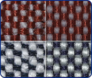
Fiber-level Woven Fabric Capture from a Single Microscopic Image
ACM Transactions on Graphics, 2026. To appear
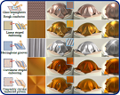
PureSample: Neural Materials Learned by Sampling Microgeometry
SIGGRAPH, 2026. To appear
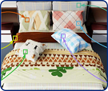
FabricGen: Microstructure-Aware Woven Fabric Generation
CVPR, 2026.
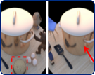
GOR-IS: 3D Gaussian Object Removal in the Intrinsic Space
CVPR, 2026.
WeatherDiffusion: Controllable Weather Editing in Intrinsic Space
CVPR, 2026.
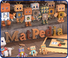
MatPedia: A Universal Generative Foundation for High-Fidelity Material Synthesis
CVPR, 2026.
HiMat: DiT-based Ultra-High Resolution SVBRDF Generation
Computer Graphics Forum (Proceedings of Eurographics), 2026. To appear
2025
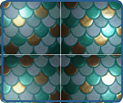
Diffusion-Guided Relighting for Single-Image SVBRDF Estimation
Proceedings of SIGGRAPH Asia, 2025.
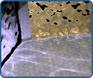
Sample Space Partitioning and Spatiotemporal Resampling for Specular Manifold Sampling
Proceedings of SIGGRAPH Asia, 2025. To appear
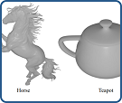
GS-ROR2: Bidirectional-guided 3DGS and SDF for Reflective Object Relighting and Reconstruction
ACM Transactions on Graphics, 2025.
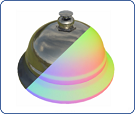
Gaussian Splatting with Discretized SDF for Relightable Assets
ICCV, 2025.
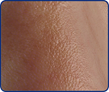
Facial Microscopic Structures Synthesis from a Single Unconstrained Image
Proceedings of SIGGRAPH 2025, 2025.
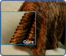
Proceedings of SIGGRAPH 2025, 2025.

EGSR, 2025.
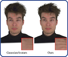
Joint Gaussian Deformation in Triangle-Deformed Space for High-Fidelity Head Avatars
EGSR, 2025.

SVG-IR: Spatially-Varying Gaussian Splatting for Inverse Rendering
CVPR, 2025.

RNG: Relightable Neural Gaussians
CVPR, 2025.
2024

Correlation-aware Encoder-Decoder with Adapters for SVBRDF Acquisition
Proceedings of SIGGRAPH Asia 2024, 2024.
TensoSDF: Roughness-aware Tensorial Representation for Robust Geometry and Material Reconstruction
ACM Transactions on Graphics (Proceedings of SIGGRAPH 2024), 2024.
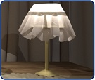
Woven Fabric Capture with a Reflection-Transmission Photo Pair
Proceedings of SIGGRAPH 2024, 2024.
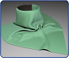
Real-time Neural Woven Fabric Rendering
Proceedings of SIGGRAPH 2024, 2024.

Neural Super-Resolution for Real-time Rendering with Radiance Demodulation
CVPR, 2024.
2023

Multiple-bounce Smith Microfacet BRDFs using the Invariance Principle
Proceedings of SIGGRAPH Asia 2023, 2023 (Dec.)

MetaLayer: A Meta-learned BSDF Model for Layered Materials
ACM Transactions on Graphics (Proceedings of SIGGRAPH Asia 2023), 2023 (Dec.)

World-Space Spatiotemporal Path Resampling for Path Tracing
Computer Graphics Forum (Proceedings of PG 2023), 2023.

Efficient Caustics Rendering via Spatial and Temporal Path Reuse
Computer Graphics Forum (Proceedings of PG 2023)

Efficient Participating Media Rendering with Differentiable Regularization
CVMJ, 2023

Real-time All-frequency Global Illumination with Radiance Caching
CVMJ, 2023

Neural Biplane Representation for BTF Rendering and Acquisition
Proceedings of SIGGRAPH 2023, 2023 (July)

Scratch-based Reflection Art via Differentiable Rendering
ACM Transactions on Graphics (Proceedings of SIGGRAPH 2023), 2023 (July)

SpongeCake: A Layered Microflake Surface Appearance Model
ACM Transactions on Graphics (presented at Siggraph 2023), Volume 42, Issue 1, Article No.: 8pp 1–16. 2022.
2022

Woven Fabric Capture from a Single Photo
Proceedings of SIGGRAPH Asia 2022.

Unbiased Caustics Rendering Guided by Representative Specular Paths
Proceedings of SIGGRAPH Asia 2022.

Proceedings of SIGGRAPH 2022, 2022 (July)

Position-free Multiple-bounce Computations for Smith Microfacet BSDFs
ACM Transactions on Graphics (Proceedings of SIGGRAPH 2022), Volume 41, Issue 4, Article No.:134, pp 1–14. 2022 (July)

SVBRDF Recovery From a Single Image With Highlights using a Pretrained Generative Adversarial Network
Computer Graphics Forum, 2022

Constant-Cost Spatio-Angular Prefiltering of Glinty Appearance Using Tensor Decomposition
ACM Transactions on Graphics, Volume 41, Issue 2, Article No.:22, pp 1–17. 2022

Efficient Specular Glints Rendering with Differentiable Regularization
IEEE TVCG, 2022

A Survey on Homogeneous Participating Media Rendering
Computational Visual Media, volume 8, pages177–198 (2022)
2021

Real-time Denoising Using BRDF Pre-integration Factorization
Computer Graphics Forum (Proceedings of Pacific Graphics), 2021 (Oct)

Interactive Simulation of Scattering Effects in Participating Media Using a Neural Network Model
IEEE Transactions on Visualization and Computer Graphics, Vol.27, No. 7, pp. 3123 - 3134. July, 2021

A Deep Learning Method for 2D Image Stipplingn
Computer Graphics International, 2021 (Sep)

中国图象图形学报, Volume 26, Number 5, 2021

Path-based Monte Carlo Denoising Using a Three-Scale Neural Network
Computer Graphics Forum, Feb. 2021. Volume 40, Issue 1, Pages 369-381
2020

Path Cuts: Efficient Rendering of Pure Specular Light Transport
ACM Transactions on Graphics (Proceedings of SIGGRAPH Asia 2020), Volume 39, Issue 6, Article 238.

EGSR 2020

Denoising Stochastic Progressive Photon Mapping Renderings Using a Multi-Residual Network
Journal of Computer Science and Technology, 35(3), 506–521

Real-Time Glints Rendering with Prefiltered Discrete Stochastic Microfacets
Computer Graphics Forum, Volume39, Issue6, September 2020. Pages 144-154

Example-Based Microstructure Rendering with Constant Storage
ACM Transactions on Graphics (present at SIGGRAPH 2020), 39(5): Article 162.

Hong Deng, Beibei Wang#, Rui Wang, Nicolas Holzschuch.
A Practical Path Guiding Method for Participating Media
Computational Visual Media Journal, Springer, Vol. 6, No. 1, March 2020, 37–51.

A Detail Preserving Neural Network Model for Monte Carlo Denoising
Computational Visual Media Journal, Vol. 6. April 2020, 157–168.

IEEE Transactions on Visualization and Computer Graphics, Vol.26, No. 10, pp. 2961-2969. 2020.

Precomputed Multiple Scattering for Rapid Light Simulation in Participating Media
IEEE Transactions on Visualization and Computer Graphics, Vol. 26, No. 7, pp. 2456 - 2470, July 2020.
2019

基于物理的真实感绘制方法研究进展.
中国计算机科学技术进展报告（CCF2018-2019）.

An Efficient Distributed Global Illumination Method Based on Photon Mapping
Computer & Graphics, Elsevier, Vol. 82, August 2019, Pages 214-221

Real-time structure aware color stippling
Siggraph, Poster,2019
2018

Point-Based Rendering for Homogeneous Participating Media with Refractive Boundaries
IEEE Transactions on Visualization and Computer Graphics, 2018, 24 (10), pp.2743-2757.

Fast Global Illumination with Discrete Stochastic Microfacets Using a Filterable Model
Computer Graphics Forum, Wiley, 2018, 37 (7), pp.55-64.

A Compact Representation for Multiple Scattering in Participating Media using Neural Networks
Siggraph 2018 Talks, Aug 2018, Vancouver, Canada. pp.1-2.
2017

Vectorized Point based Global Illumination on Intel MIC Architecture
Computers and Graphics, 70:206-213, February 2018

Crest: Novel Ocean Rendering Techniques in an Open Source Framework
Siggraph 2017 Advances in Real-Time Rendering in Games, Jul 2017, Los angeles, United States

Precomputed Multiple Scattering for Light Simulation in Participating Medium
Siggraph 2017 Talk, Jul 2017, Los Angeles, United States. pp.Article No. 35,
2016

A Robust and Flexible Real-Time Sparkle Effect
EGSR 2016 E&I - Eurographics Symposium on Rendering - Experimental Ideas & Implementations, Jun 2016, Dublin, Ireland. pp.49-54.

Point-Based Light Transport for Participating Media with Refractive Boundaries
Eurographics Symposium on Rendering 2016 - Experimental Ideas & Implementations, Jun 2016, Dublin, Ireland.
2015

Sparkly but not too sparkly! Anti-aliasing a procedural sparkle effect
Siggraph 2015 Advances in Real-time Rendering in Games, Aug 2015, Los Angeles, United States

Non-diffuse effects for point-based global illumination
Siggraph 2015, Aug 2015, Los Angeles United States.

Wavelet Point-Based Global Illumination.
Computer Graphics Forum. vol.34.4(2015),pp.143-154(EGSR 2015)
2014

Computer Science [cs]. Shandong University, 2014. Chinese
2013

Factorized Point-Based Global Illumination.
Computer Graphics Forum, vol.32.4(2013), pp.117-123 (EGSR 2013)
2011

Fast Point Based Global Illumination
Computer-Aided Design and Computer Graphics, Sep 2011, Jinan, China.